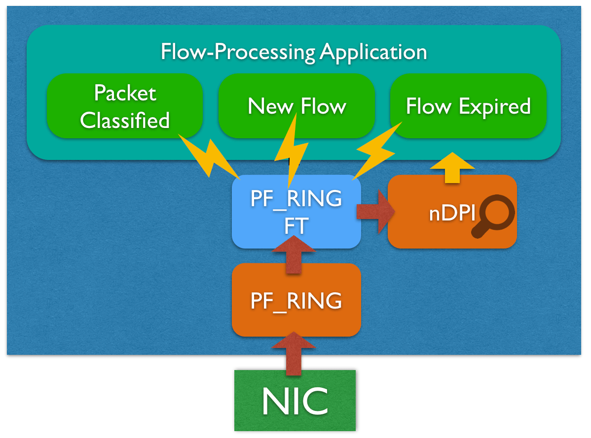

PF_RING FT (таблица потоков)
PF_RING FT реализует оптимизированную таблицу потоков, которую можно использовать для отслеживания потоков и извлекайте метаданные потока, включая протокол L7, благодаря встроенной интеграции с nDPI. Используя PF_RING FT, можно написать приложение для обработки потоков, управляемое событиями. на фактической обработке потока, а не на управлении и производительности таблицы потоков, на самом деле он предоставляет множество хуков, которые можно использовать для настройки и расширения основной таблицы для построения любые приложения для анализа потока, включая датчики, IDS, IPS.

API Обзор
Проектирование и реализация приложения обработки потоков на базе PF_RING FT — довольно сложная задача. прост, поскольку он предоставляет чистый API, который можно использовать для выполнения сложных задач в несколько строк кода. Следующий фрагмент кода показывает, как легко захватывать трафик. и информацию о потоках экспорта с помощью PF_RING FT.
ft = pfring_ft_create_table(flags, 0, 0, 0);
pfring_ft_set_flow_export_callback(ft, processFlow, NULL);
while (1) {
if (pfring_recv(pd, &buffer_p, 0, &hdr, 0) > 0)
action = pfring_ft_process(ft, p, (pfring_ft_pcap_pkthdr *) h);
}
void processFlow(pfring_ft_flow *flow, void *user){
pfring_ft_flow_key *k = pfring_ft_flow_get_key(flow);
pfring_ft_flow_value *v = pfring_ft_flow_get_value(flow);
/* flow export here with metadata in k and v */
}
Полный пример доступен на github в разделе example_ft.
Обратите внимание, что FT API не зависит от захвата, это означает, что можно использовать любую структуру захвата. для захвата необработанного трафика в приведенном выше примере мы использовали PF_RING. При использовании PF_RING нет необходимости связывать дополнительные библиотеки, поскольку PF_RING FT уже является частью PF_RING, вместо этого при использовании другой платформы libpfring_ft доступен под библиотеки папку необходимо связать.
Чтобы написать приложение на основе PF_RING FT, первым делом необходимо создать pfring_ft_table объект, который представляет экземпляр таблицы потоков, это можно сделать, вызвав pfring_ft_create_table:
pfring_ft_table *ft = pfring_ft_create_table(flags, 0, 0, 0);
pfring_ft_create_table параметры включают в себя:
флаги который можно использовать для включения дополнительных функций, таких как обнаружение протокола L7 на основе nDPI (PFRING_FT_TABLE_FLAGS_DPI)
максимальное количество активных потоков, которые должна обрабатывать таблица потоков (по умолчанию: 500 КБ)
таймаут для бездействующих потоков (по умолчанию: 30 секунд)
максимальная продолжительность/время жизни потока (по умолчанию: 120 секунд)
Как было сказано ранее, работа приложения, разработанного на основе PF_RING FT, управляется событиями. перед подачей в таблицу потоков необработанных пакетов приложение может зарегистрироваться для получения уведомлений когда происходит новое событие через крючки. Эти события включают в себя:
Новый поток(pfring_ft_set_new_flow_callback)
Пакет классифицирован (pfring_ft_set_flow_packet_callback)
Истечение потока (pfring_ft_set_flow_export_callback или pfring_ft_set_flow_list_export_callback)
Регистрация для получения уведомлений о событиях означает настройку обратного вызова, который будет вызываться, например, когда срок действия потока истек, и его следует обработать (например, экспортировать в случае приложения Netflow):
pfring_ft_set_flow_export_callback(ft, processFlow, NULL);
В этом примере процессПоток — это обратный вызов, который будет вызываться при возникновении события. Этот обратный вызов может получить доступ к информации о потоке, включая ключ потока (5-кортеж) и собранные встроенные данные потока. от FT (обратите внимание, что приложение может расширять эти данные, получая доступ к пользовательским метаданным с помощью pfring_ft_flow_value.user указатель), чтобы вычислять действия на основе состояния потока.
void processFlow(pfring_ft_flow *flow, void *user){
pfring_ft_flow_value *v = pfring_ft_flow_get_value(flow);
/* Example of printing the L7 protocol for this flow: */
printf("l7: %s\n", pfring_ft_l7_protocol_name(ft, &v->l7_protocol, buf, sizeof(buf)));
}
Наконец, нам нужно заполнить таблицу потоков необработанными пакетами, это достигается вызовом pfring_ft_process в основной цикл захвата для каждого пакета.
while (1) {
if (pfring_recv(pd, &buffer_p, 0, &hdr, 0) > 0)
action = pfring_ft_process(ft, p, (pfring_ft_pcap_pkthdr *) h);
}
pfring_ft_process функция возвращает действие (по умолчанию/переслать/отменить) в случае, если поток помечен приложением (в соответствии с пользовательскими политиками) или встроенным механизмом фильтрации как описано в следующих разделах. Здесь должна произойти фильтрация пакетов.
Прежде чем уничтожить стол потока с помощью pfring_ft_destroy_table, рекомендуется позвонить pfring_ft_flush для обработки всех потоков, которые все еще активны и еще не экспортированы.
Для получения подробной информации, пожалуйста, обратитесь к API документация.
nDPI Интеграция
PF_RING FT изначально интегрирован с nDPI для предоставления информации о протоколе L7 из коробка. Самому приложению не нужно напрямую работать с библиотекой nDPI, поскольку все происходит за кулисами. Чтобы получить информацию L7 в метаданных потока в pfring_ft_flow_value.l7_protocol, все, что вам нужно сделать, это
включить обнаружение L7 через PFRING_FT_TABLE_FLAGS_DPI флаг:
ft = pfring_ft_create_table(PFRING_FT_TABLE_FLAGS_DPI);
прочитать протокол L7 из pfring_ft_flow_value.l7_protocol
Примечание: начиная с PF_RING 7.3. ndpi устанавливается как зависимость от пфринг при установке из пакетов. Если вы компилируете исходный код или используете более старую версию PF_RING, вам необходимо вручную установить библиотеку nDPI из https://github.com/ntop/nDPI следующий шаги ниже:
git clone https://github.com/ntop/nDPI.git
cd nDPI
./autogen.sh
make && sudo make install
Примечание
Если вы устанавливаете стабильный версию PF_RING, вам также следует клонировать последнюю стабильную версию nDPI, чтобы убедиться, что API синхронизирована.
L7 Фильтрация и шунтирование
PF_RING FT имеет механизм фильтрации L7, который можно использовать для фильтрации потоков в зависимости от приложения. протокол или может быть расширен с помощью пользовательских политик. Обычно это касается, например, IPS, межсетевых экранов L7 и других встроенных приложений. Использовать встроенный механизм фильтрации L7 можно, установив правила фильтрации через API. или через файл конфигурации. API предоставляет функции для фильтрации или шунтирования трафика (определяя количество пакетов для каждого потока, который разрешено пройти, прежде чем их отбросить) на основе протокола приложения. Пример:
pfring_ft_set_filter_protocol_by_name(ft, "UPnP", PFRING_FT_ACTION_DISCARD);
pfring_ft_set_shunt_protocol_by_name(ft, "SSH", 5);
Также можно указать правила фильтрации и шунтирования с помощью файла конфигурации:
[shunt]
default = 10
tcp = 15
udp = 2
HTTP = 10
[filter]
YouTube = discard
Netflix = discard
Где:
поддерживаемые записи для шунт раздел включает все протоколы приложений nDPI, tcp/udp для протоколов L4, когда нет совпадения протокола приложения, по умолчанию для всего трафика, не соответствующего ни одному из правил приложения или L4 (по умолчанию для по умолчанию равен 0, что означает, что шунтирование отключено).
поддерживаемые записи для фильтр раздел включает все протоколы приложений nDPI
поддерживаемые действия по фильтр раздел вперед и отказаться.
пожалуйста, проверьте ndpiReader -h (входит в ndpi) для получения полного списка поддерживаемых протоколов nDPI
Также можно указать действие по умолчанию для обнаруженных протоколов, добавив глобальное значение по умолчанию:
[global]
default = forward
Этот файл может быть предоставлен механизму фильтрации с помощью pfring_ft_load_configuration API:
pfring_ft_load_configuration(ft, "/etc/ft_rules.conf");
pfring_ft_process API возвращает PFRING_FT_ACTION_DISCARD в качестве действия для пакетов, которые должны быть отбрасываются в соответствии с политикой фильтрации или шунтирования.
Помимо встроенного механизма фильтрации, приложение может отмечать потоки для фильтрации или шунтирования. их на основе пользовательских политик с использованием pfring_ft_flow_set_action API.
Файл конфигурации также можно использовать для настройки дополнительных параметров обнаружения nDPI и таблицы потоков. включая бездействие потока и тайм-ауты времени жизни. Пример:
[global]
default = forward
dpi_min_num_tcp_packets = 12
dpi_min_num_udp_packets = 5
flow_idle_timeout = 30
flow_lifetime_timeout = 120
Имейте в виду, что механизм глубокой проверки пакетов, реализованный с помощью nDPI, требует проверки нескольких пакетов в начале каждого сеанса связи, прежде чем можно будет идентифицироваться с разумной степень достоверности протокола L7. По этой причине начальные пакеты любого сообщения обычно не помечен протоколом и не фильтруется, если он используется для фильтрации трафика, до протокола L7 обнаружен.
IDS-ускорение
Механизм фильтрации PF_RING FT L7 также можно использовать для ускорения приложений, связанных с CPU, таких как IDS/IPS, шунтирующие потоки на основе протокола приложения. Отказ от слоновьих потоков становится распространенная, но эффективная практика сокращения объема трафика, который необходимо проверять IDS/IPS (обычно мультимедийный трафик), резко сокращая потери пакетов и повышая производительность системы.
Используя PF_RING FT, любое приложение на базе PF_RING или Libpcap может воспользоваться преимуществами L7 шунтирования без изменения ни одной строчки кода, все, что вам нужно сделать, это установить PF_RING_FT_CONF переменная среды с путем к файлу конфигурации.
Например, если мы хотим отфильтровать трафик Youtube и Netflix, нам нужно создать конфигурацию файл, подобный приведенному ниже:
# cat /etc/pf_ring/ft-rules.conf
[filter]
YouTube = discard
Netflix = discard
И запустите Suricata поверх PF_RING, установив PF_RING_FT_CONF переменная среды в соответствии по пути к файлу конфигурации:
# PF_RING_FT_CONF=/etc/pf_ring/ft-rules.conf suricata --pfring-int=zc:eth1 -c /etc/suricata/suricata.yaml
Обратите внимание, что также можно определить собственные протоколы L7 (например, на основе IP-адреса или имени хоста), используя стандартный формат файла nDPI для пользовательских протоколов (см. пример здесь) и укажите путь к файлу, установив переменную среды PF_RING_FT_PROTOCOLS.
Пожалуйста, обратитесь к Использование Suricata с PF_RING и Использование Bro с PF_RING руководства по включению поддержки PF_RING FT в Suricata и Bro. Обратите внимание, что то же ускорение можно использовать и с другими IDS, такие как Snort.